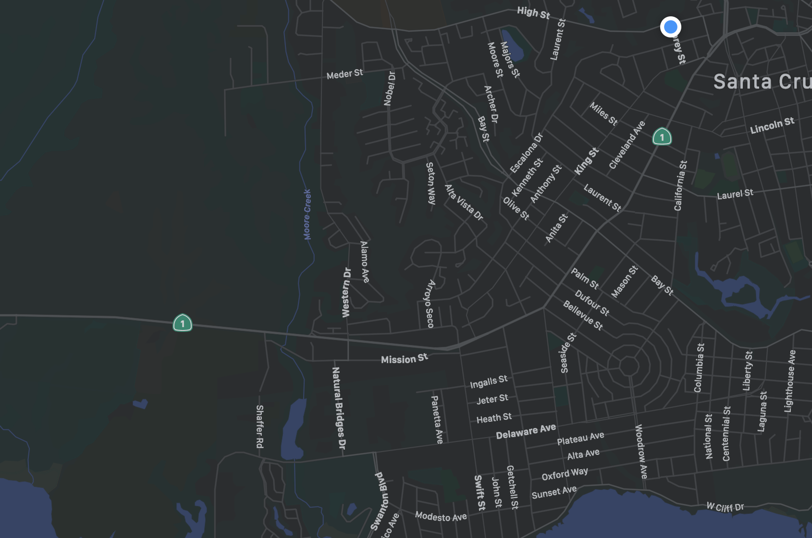

[[extend './layout.html']]

<!-- looking at layout.html this page is connected to content.css
when it should be connected to profile.css
still trying to figure out how to add custom header here for its style sheet -->

<style>
  [v-cloak] {
    display: none;
  }
</style>

<section class="section" id="vue-target" v-cloak>
  <div class="container">
    <h1 class="title is-1">{{first_name}} {{last_name}}'s Profile</h1>
    <div class="columns">
      <div class="column is-two-fifths">
        <h4 class="subtitle is-4">Email: {{email}}</h4>
        <h4 class="subtitle is-4">Vaccinated: Yes</h4>
        <h4 class="subtitle is-4">Saved Locations:</h4>
        <h4 class="subtitle is-5 has-text-danger" v-if="saved_locations.length === 0">
          You do not have any saved locations.
        </h4>

        <div class="sl-container mb-3" v-for="(sl, index) in saved_locations">
          <nav class="level">
            <div class="level-left">
              <div class="level-item">
                <a class=" subtitle is-5 has-text-success"
                  :href='`/183-project/location?zip=${sl[2]}&rad=${sl[3]}&loc=${sl[0].replace(/ /g, "%20").replace("#", "%23")}&addr=${sl[1]}`'>
                  {{sl[0]}} {{sl[1]}}
                </a>
              </div>
            </div>
            <div class="level-right">
              <div class="level-item">
                <a class="button" @click="unsave_profile(index)">
                  <span class="icon"><i class="fa fa-fw fa-trash"></i></span>
                </a>
              </div>
            </div>
          </nav>
        </div>

      </div>
      <div class="column">
        <!-- <figure class="image">
          
        </figure> -->
        <!-- the code below is provided by the Mapbox API -->
        <div id='map' style='width: 400px; height: 300px;'></div>
      </div>
    </div>
  </div>
</section>

[[block page_scripts]]

<script>
  // load url's here
  let load_user_info_url = "[[=XML(load_user_info_url)]]";
  let unsave_profile_url = "[[=XML(unsave_profile_url)]]";
</script>
<script src="js/profile.js"></script>
<script>
  mapboxgl.accessToken = 'pk.eyJ1Ijoib29tZWxjaGUiLCJhIjoiY2twM2M2bXlxMDRxOTJ2bzZieXQ5cWZ5eSJ9.mRi_Q_vf9wrup84Lu_1wQA';
  var map = new mapboxgl.Map({
    container: 'map',
    style: 'mapbox://styles/mapbox/streets-v11'
  });
</script>
[[end]]